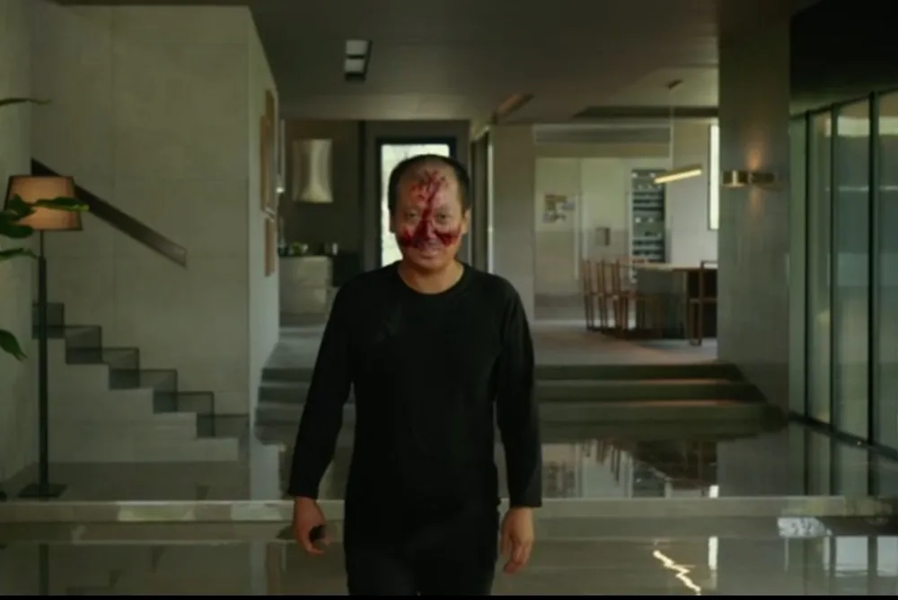

Violence
Violence in the movie gradually shows as the by-product of class inequality and a mixture of other emotions, like anger, deseration, and jealousy. The violence we see in the movie can be divided into psychological and physical violence. The Park family invites the Kim's into their lives, but doesn't treat them equally as they would themselves, and excludes them in ways that obviously makes them feel inferior than the Park family. One example where violence is insinuated is when the Kims are staying at Parks' house and Chung-sook(mother of the Kim family) teases Ki-taek(father of the Kim family) calling him a cockroach, pointing at their lives as parasites and the ways they would be called if someone found out their plan and how they came to the top. Violence can clearly be seen in the interactions of the Kims with Moon-gwang(the original housekeeper) and her husband. Both of the groups are fighting for the opportunity for parasitical life and manipulation of the Parks, but the greed that both of the groups have results in a violent fight where only one group will end up winning. The culmination of violence occurs at the end of the movie when all the characters finally come together and it results in a blood bath. Chung-sook(mother of the Kim family) pushes Moon-gwang(the original housekeeper) down the stairs to the basement, where she would likely not be found again. Geun-sae(Moon-gwang's husband) hits Ki-woo(son of the Kim family) with a rock, leaving him to bleed on the ground, then stabs Ki-jung(daughter of the Kim family). Chung-sook stabs Geun-sae to protect herself and Ki-taek stabs Mr. Park in rage. All of the events here are a result of the tension that was building out throughout the movie, and it was inevitable that something like this would happen, because it was impossible to keep these secrets hidden for a long time. The end just shows the effect that violence has on people and the trauma it permanently causes.